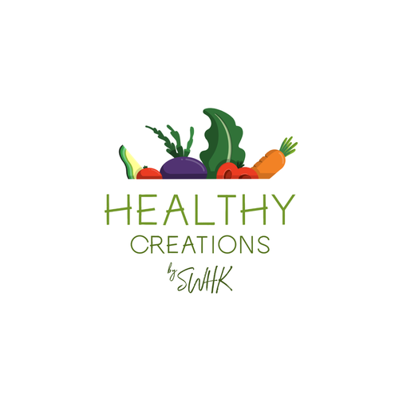

Choose Your Healthy
Breakfast / Lunch / Dinner

Greetings from our Healthy Kitchen!
"Deliciously Nutritious 5 Wholesome Recipes for a Healthier You"
In a world filled with tempting treats and fast-food conveniences, maintaining a nutritious diet can be a rewarding challenge. To help you embark on a journey of wholesome eating, we've curated five delicious and easy-to-make recipes that prioritize your health without compromising on flavor.
1.Quinoa and Vegetable Stir-Fry:
Packed with protein-rich quinoa and an assortment of colorful vegetables, this stir-fry is a nutritional powerhouse. The combination of broccoli, bell peppers, and snap peas provides a spectrum of vitamins and minerals, while quinoa offers a complete source of plant-based protein.
2.Mango Avocado Salad with Grilled Chicken:
Say goodbye to boring salads with this vibrant mix of ripe mango, creamy avocado, and perfectly grilled chicken. Rich in fiber, vitamins, and healthy fats, this salad is not only a feast for the eyes but also a boost for your immune system and skin health.
3.Baked Salmon with Lemon and Dill:
Elevate your omega-3 intake with this simple yet elegant baked salmon dish. The combination of fresh lemon and dill adds a burst of flavor while providing essential nutrients that support heart health and brain function.
4.Sweet Potato and Black Bean Enchiladas:
Who said healthy can't be hearty? These enchiladas are a fusion of flavors and nutrients, featuring sweet potatoes, black beans, and a medley of spices. With a satisfying dose of fiber and protein, this dish is a win-win for your taste buds and your well-being.
5.Greek Yogurt Parfait with Berries and Almonds:
End your day on a sweet note with a nutritious Greek yogurt parfait. Layered with mixed berries, honey, and crunchy almonds, this dessert-like treat is not only delicious but also a fantastic source of probiotics, antioxidants, and essential nutrients.
These recipes not only cater to your taste buds but also prioritize your health. Give them a try and savor the goodness of wholesome ingredients.
"
"Eating Well A Week of Nutrient-Packed Meal Ideas"
Embarking on a journey to healthier
eating doesn't mean sacrificing flavor or satisfaction. Here's a
week-long meal plan packed with nutrient-dense and delicious recipes to
fuel your body and support your overall well-being.
Day 1: Breakfast - Overnight Oats with Berries and Almond Butter
Kickstart your day with a hearty bowl of overnight oats. Packed with
fiber, antioxidants from berries, and the wholesome goodness of almond
butter, this breakfast sets the tone for a nutritious day.
Day 2: Lunch - Quinoa Salad with Chickpeas and Roasted Vegetables
Enjoy a colorful quinoa salad featuring protein-rich chickpeas and a
medley of roasted vegetables. This lunch option is not only visually
appealing but also a powerhouse of vitamins, minerals, and plant-based
proteins.
Day 3: Dinner - Grilled Chicken Breast with Sweet Potato Mash and
Steamed Broccoli
A balanced dinner that combines lean protein, complex carbohydrates,
and fiber. Grilled chicken provides essential amino acids, sweet potato
mash offers a dose of beta-carotene, and steamed broccoli adds vitamins
and minerals.
Day 4: Snack - Greek Yogurt Parfait with Granola
Satisfy your midday cravings with a Greek yogurt parfait. Layer it with
granola for a delightful crunch, and reap the benefits of probiotics and
protein from the yogurt.
Day 5: Dinner - Baked Salmon with Asparagus and Quinoa
Elevate your omega-3 intake with baked salmon, paired with fiber-rich
quinoa and nutrient-packed asparagus. This dinner option is not only
delicious but also supports heart health and overall well-being.
Day 6: Breakfast - Avocado Toast with Poached Egg
Start your weekend with a trendy yet nutritious avocado toast topped
with a poached egg. This breakfast provides a balance of healthy fats,
protein, and complex carbohydrates.
Day 7: Dinner - Lentil and Vegetable Stew
End your week on a cozy note with a hearty lentil and vegetable stew.
Packed with plant-based protein, fiber, and a variety of vegetables,
this stew is a comforting and nutritious choice.
By incorporating these nutrient-packed meals into your week, you can
embark on a journey of healthier eating without compromising on taste or
satisfaction. Remember to enjoy the process and savor the flavors of
wholesome ingredients.
Kickstart your day with a hearty bowl of overnight oats. Packed with fiber, antioxidants from berries, and the wholesome goodness of almond butter, this breakfast sets the tone for a nutritious day.
Day 2: Lunch - Quinoa Salad with Chickpeas and Roasted Vegetables
Enjoy a colorful quinoa salad featuring protein-rich chickpeas and a medley of roasted vegetables. This lunch option is not only visually appealing but also a powerhouse of vitamins, minerals, and plant-based proteins.
Day 3: Dinner - Grilled Chicken Breast with Sweet Potato Mash and Steamed Broccoli
Day 4: Snack - Greek Yogurt Parfait with Granola
Satisfy your midday cravings with a Greek yogurt parfait. Layer it with granola for a delightful crunch, and reap the benefits of probiotics and protein from the yogurt.
Day 5: Dinner - Baked Salmon with Asparagus and Quinoa
Elevate your omega-3 intake with baked salmon, paired with fiber-rich quinoa and nutrient-packed asparagus. This dinner option is not only delicious but also supports heart health and overall well-being.
Day 6: Breakfast - Avocado Toast with Poached Egg
Start your weekend with a trendy yet nutritious avocado toast topped with a poached egg. This breakfast provides a balance of healthy fats, protein, and complex carbohydrates.
Day 7: Dinner - Lentil and Vegetable Stew
End your week on a cozy note with a hearty lentil and vegetable stew. Packed with plant-based protein, fiber, and a variety of vegetables, this stew is a comforting and nutritious choice.
By incorporating these nutrient-packed meals into your week, you can embark on a journey of healthier eating without compromising on taste or satisfaction. Remember to enjoy the process and savor the flavors of wholesome ingredients.